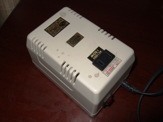
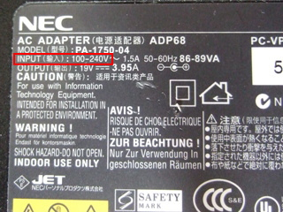
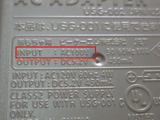
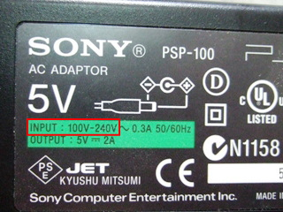
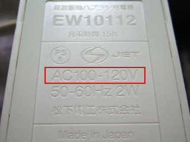

中国の電気と水について
中国の電圧は２００V、５０Hzです。
日本の電気製品は基本的に使えません。そのまま差し込むとヒューズが飛んだり、発熱、発火などの恐れもありますので、絶対にそのまま使わないでください。
中国で使える電気製品は海外対応品（100-240Ｖ）と表記してあるもののみです。変圧器を使うことで、日本国内用の電化製品も使用することができます。中国のプラグの形はさまざまで、
２つ穴と３つ穴がありますが、ほとんどの場合マルチタイプのコンセントなので、日本のプラグにも合う場合が多いですが、念のため変換プラグを持っていくと安心です。
変圧器とプラグアダプターの違い
海外旅行や海外滞在になると必ずお世話になる逸品ですが、ここで違いについて簡単に紹介しておきます。
変圧器とは、
電圧200Vを100Vに落とす、または100Vを200Vに上げるものを言います。日本から持ってきた100V専用の機器を使いたい時に使用します。
また、変圧器にも
「一般用」と
「精密機器用」と2種類あります。「精密機器用」は「一般用」に比べて供給電流が低いですが、安定した電気を供給できます。また一般用は、供給電流が多いですが、電気供給が不安定です。

これが変圧器、トランスが入っているため少し重いです。機種によって違いますが使える容量が異なります。高性能タイプでも200W程度です。
変換アダプターとは、国によって異なるコンセントの
プラグの形だけを変えるためのもので、電圧を変えるものではありません。電圧は200Vのままとなります。100V専用機器に間違って差し込むと、運がよければヒューズ切断、下手をすると機器自体が使い物にならなくなりますので、差し込む前に必ず確認を。
日本の家電製品が海外対応かどうか調べる方法
アダプターに「ＩＮＰＵＴ 入力 １００－２４０Ｖ」と表記してあれば問題ありません。コンセントや本体に記載してありますので確認してみましょう。
一部ゲーム機、一部の電気シェーバーなどは、海外対応になっている場合も多いです。またほとんどの携帯電話、スマホ、パソコン、タブレットは海外対応になっています。

ノートPCの充電器です。これはOKですね。

ゲーム機の充電器です。これはダメですね。

PSPのアダプタは？ OKです。

電動歯ブラシは？ あっ、ダメですね。
飲料水はミネラルウォーターを買いましょう
中国の水道水は、
都市部ではほとんど飲めないと思ってください。田舎部でも出来るだけミネラルウォーターを購入して飲んでもらうことをお勧めします。また日本とは水の質（軟水、硬水）が違うため、おなかをこわしてしまう人もまれにいます。入浴、洗顔、歯磨きなどには水道水は普通に問題ありません。
ミネラルウォーターは、中国産ですと５００ｍｌで２～３元、外国産ですと５００ｍｌで７～１０元で売っています。コンビニや出店、スーパーやみやげ物売り場など、日本以上にあちこちで売られています。
中国旅行注意に戻す